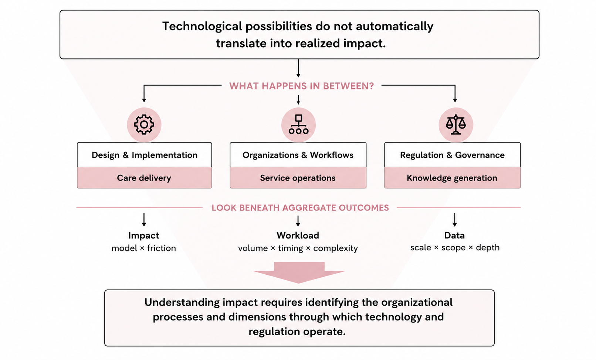

About

I am especially drawn to questions about the gap between what technology makes possible and what people actually experience. Technological progress alone does not guarantee that its benefits will reach the people who need them, and I am interested in understanding what happens in between.
Healthcare makes this tension particularly visible to me. Despite remarkable advances in medicine and technology, translating those advances into better care remains difficult. New technologies enter a complex system shaped by regulation, organizational constraints, fragmented delivery, stigma, and other barriers that can stand between technological potential and realized benefits.
This interest first led me to telehealth, where I began thinking about why the same technology can produce different real-world effects depending on how it is designed and implemented. It later drew me to data regulation and questions about how the rules governing data influence innovation itself.
AI has made this question even more compelling to me. We are watching AI capabilities advance at remarkable speed, but realizing their potential in healthcare requires much more than better models. AI has to enter organizations, fit into clinical workflows, interact with human decision makers, operate under regulation, and earn the trust of the people who use it.
My emerging research explores this space: how healthcare organizations implement and monitor AI, how humans interact with increasingly capable AI systems, and how the growing importance of AI changes the way data are generated and governed. I am excited by how many important questions in this area remain open.
When empirical findings appear mixed or contradictory, I often ask whether the apparent inconsistency comes from how we have defined the technology, outcome, or intervention itself. Rather than treating heterogeneity as something to explain only after estimation, I try to identify the organizational distinctions that may generate it in the first place.
This perspective runs through my dissertation: I distinguish between telehealth delivery models rather than treating telehealth as a single intervention, examine multiple dimensions of provider workload rather than relying on visit volume alone, and study how privacy regulation changes clinical trial design rather than focusing only on aggregate innovation outcomes.
Methodologically, I combine causal inference with computational approaches, drawing on large-scale administrative data, natural experiments, simulation, machine learning, and large language models depending on the question.